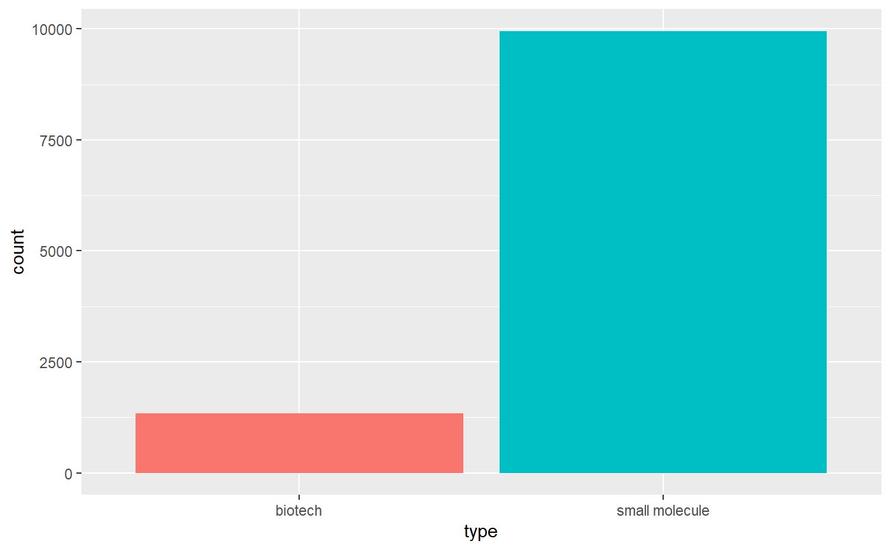
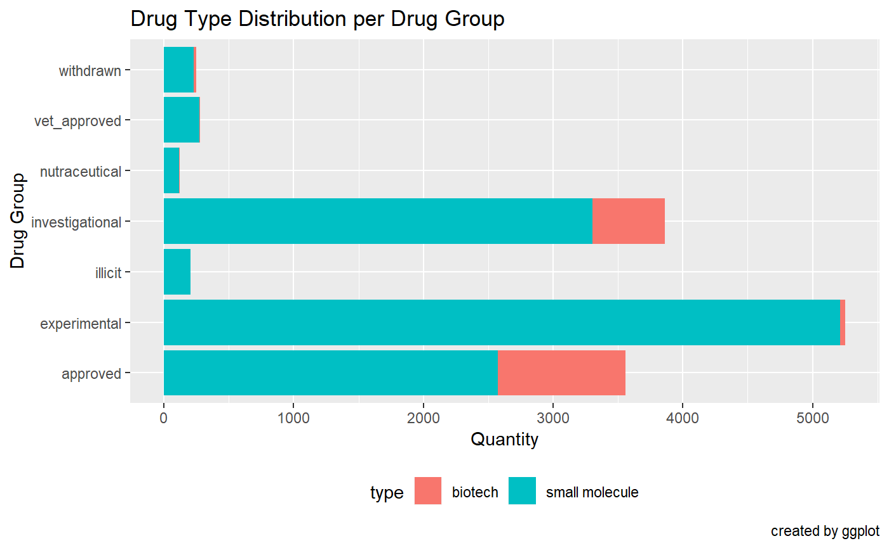
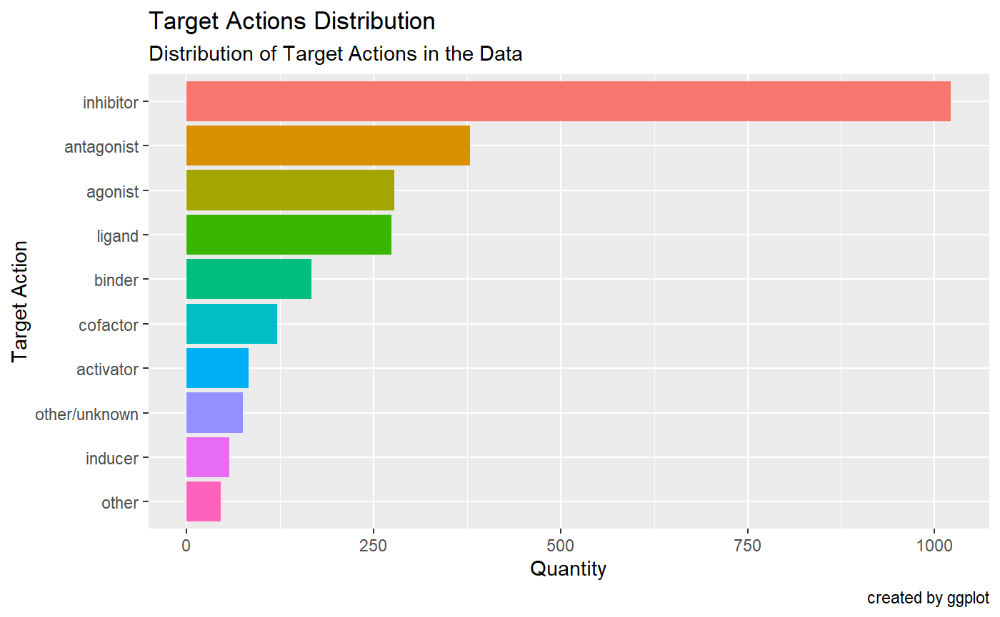

The main purpose of the dbparser package is to parse the DrugBank database which is downloadable in XML format from this link. The parsed data can then be explored and analyzed as desired by the user. The dbparser package further provides the facility of saving the parsed data into a given database.
Installation
You can install the released version of dbparser from CRAN with:
or you can install the latest updates directly from the repo
Example
This is a basic example which shows you how to solve a common problem:
## parse data from XML and save it to memory
dbparser::get_xml_db_rows(
"D:/DS Projects/Drug_Interaction/drugbank.xml"
#system.file("extdata", "drugbank_record.xml", package = "dbparser")
)
#> [1] TRUE
## load drugs data
drugs <- dbparser::parse_drug()
## load drug groups data
drug_groups <- dbparser::parse_drug_groups()
## load drug targets actions data
drug_targets_actions <- dbparser::parse_drug_targets_actions()Saving into a database
The parsed data may be saved into a given database. Databases supported by dbparser include MS SQL Server, MySQL and any database supported by DBI package. Following is an example of saving the parsed data into a MySQL database.
library(dbparser)
## open a connection to the desired database engine with an already
## created database
open_db(xml_db_name = "drugbank.xml", driver = "SQL Server",
server = "ServerName\\\\SQL2016", output_database = "drugbank")
## save 'drugs' dataframe to DB
parse_drug(TRUE)
## save 'drug_groups' dataframe to DB
parse_drug_groups(TRUE)
## save 'drug_targets_actions' dataframe to DB
parse_drug_targets_actions(TRUE)
## finally close db connection
close_db()Exploring the data
Following is an example involving a quick look at a few aspects of the parsed data. First we look at the proportions of biotech and small-molecule drugs in the data.
## view proportions of the different drug types (biotech vs. small molecule)
drugs %>%
select(type) %>%
ggplot(aes(x = type, fill = type)) +
geom_bar() +
guides(fill=FALSE) ## removes legend for the bar colors
Below, we view the different drug_groups in the data and how prevalent they are.
## view proportions of the different drug types for each drug group
drugs %>%
full_join(drug_groups, by = c('primary_key' = 'drugbank_id')) %>%
select(type, group) %>%
ggplot(aes(x = group, fill = type)) +
geom_bar() +
theme(legend.position= 'bottom') +
labs(x = 'Drug Group',
y = 'Quantity',
title="Drug Type Distribution per Drug Group",
caption="created by ggplot") +
coord_flip()
Finally, we look at the drug_targets_actions to observe their proportions as well.
## get counts of the different target actions in the data
targetActionCounts <-
drug_targets_actions %>%
group_by(action) %>%
summarise(count = n()) %>%
arrange(desc(count))
## get bar chart of the 10 most occurring target actions in the data
p <-
ggplot(targetActionCounts[1:10,],
aes(x = reorder(action,count), y = count, fill = letters[1:10])) +
geom_bar(stat = 'identity') +
labs(fill = 'action',
x = 'Target Action',
y = 'Quantity',
title = 'Target Actions Distribution',
subtitle = 'Distribution of Target Actions in the Data',
caption = 'created by ggplot') +
guides(fill = FALSE) + ## removes legend for the bar colors
coord_flip() ## switches the X and Y axes
## display plot
p